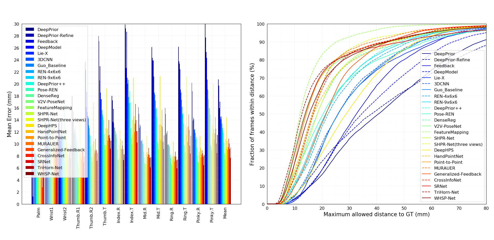
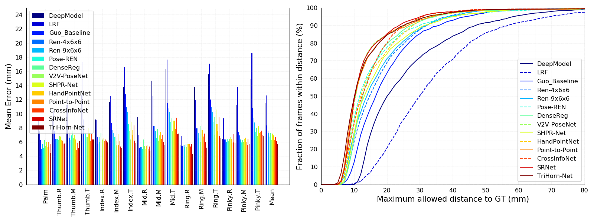
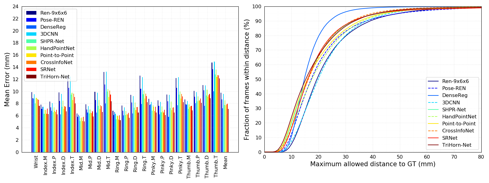

Evaluations on hand pose estimation
Description
This project provides codes to evaluate performances of hand pose estimation on several public datasets, including NYU, ICVL, MSRA hand pose dataset. We collect predicted labels of some prior work which are available online and visualize the performances.
Evaluation metric
There are two types of evaluation metrics that are widely used for hand pose estimation:
(1) Mean error for each joint
(2) Success rate: - The proportion of test frames whose average error falls below a threshold - The proportion of test frames whose maximum error falls below a threshold - The proportion of all joints whose error falls below a threshold
Methods and corresponding predicted labels
ICVL
- LRF [1]: CVPR'14, Predicted labels
- DeepModel [2]: IJCAI'16, Predicted labels
- Guo-Baseline [3]: ICIP'17, Predicted labels
- REN-4x6x6 [3]: ICIP'17, Predicted labels
- REN-9x6x6 [7]: JVCI'18, Predicted labels
- Pose-REN [8]: NEUCOM'18, Predicted labels
- DenseReg [10]: CVPR'18, Predicted labels
- V2V-PoseNet [12]: CVPR'18, Predicted labels
- SHPR-Net [14]: Access'18, Predicted labels
- HandPointNet [15]: CVPR'18, Predicted labels
- Point-to-Point [16]: ECCV'18, Predicted labels
- CrossInfoNet [19]: CVPR'19, Predicted labels
- TriHorn-Net [22]: ArXiv'22, Predicted labels
- SRNet [23]: TMM'21, Predicted labels
NYU
- DeepPrior [4]: CVWW'15, Predicted labels
- DeepPrior-Refinement [4]: CVWW'15, Predicted labels
- Feedback [5]: CVPR'15, Predicted labels
- DeepModel [2]: IJCAI'16, Predicted labels
- Lie-X [6]: IJCV'16, Predicted labels
- Guo-Baseline [3]: ICIP'17, Predicted labels
- REN-4x6x6 [3]: ICIP'17, Predicted labels
- REN-9x6x6 [7]: JVCI'18, Predicted labels
- Pose-REN [8]: NEUCOM'18, Predicted labels
- DeepPrior++ [9]: ICCVW'17, Predicted labels
- DenseReg [10]: CVPR'18, Predicted labels
- 3DCNN [11]: CVPR'17, Predicted labels
- V2V-PoseNet [12]: CVPR'18, Predicted labels
- FeatureMapping [13]: CVPR'18, Predicted labels
- SHPR-Net [14]: Access'18, Predicted labels
- SHPR-Net (three views) [14]: Access'18, Predicted labels
- HandPointNet [15]: CVPR'18, Predicted labels
- Point-to-Point [16]: ECCV'18, Predicted labels
- MURAUER [17]: WACV'19, Predicted labels
- Generalized-Feedback [18]: TPAMI'19, Predicted labels
- CrossInfoNet [19]: CVPR'19, Predicted labels
- DeepHPS [20]: 3DV'18, Predicted labels
- WHSP-Net [21]: Sensors'19, Predicted labels
- TriHorn-Net [22]: ArXiv'22, Predicted labels
- SRNet [23]: TMM'21, Predicted labels
MSRA
- REN-9x6x6 [7]: JVCI'18, Predicted labels
- Pose-REN [8]: NEUCOM'18, Predicted labels
- DenseReg [10]: CVPR'18, Predicted labels
- 3DCNN [11]: CVPR'17, Predicted labels
- SHPR-Net [14]: Access'18, Predicted labels
- HandPointNet [15]: CVPR'18, Predicted labels
- Point-to-Point [16]: ECCV'18, Predicted labels
- CrossInfoNet [19]: CVPR'19, Predicted labels
- TriHorn-Net [22]: ArXiv'22, Predicted labels
- SRNet [23]: TMM'21, Predicted labels
Notes
-
Note that only 14 out of 36 joints are used for evaluation and we use the joints with id [0, 3, 6, 9, 12, 15, 18, 21, 24, 25, 27, 30, 31, 32]. All labels are in the format of (u, v, d) where u and v are pixel coordinates.
-
The code to plot errors over different yaw and pitch angles for MSRA is still under construction and needs further improvement. Stay tuned.
-
For Lie-X, the original predicted labels are in format of (x, y, z) and the order of joints is different. We convert the labels from xyz to uvd and permute the order of joints to keep consistent with other methods (see src/convert_results_xyz2uvd_LieX.py).
-
For DenseReg, we convert the original predicted labels from xyz to uvd (see src/convert_results_xyz2uvd_denseReg.py).
-
Since DeepPrior[4] and DeepPrior++[9] only provide predicted labels of Sequence A (702 frames) for ICVL dataset (totally 1596 frames for two test sequences), we haven't included these method in comparisons for ICVL dataset yet.
-
DeepPrior++[9] also provides predicted labels of for MSRA dataset online. However, the results seem to be shuffled so we haven't included these results yet, stay tuned.
-
For 3DCNN, HandPointNet and Point-to-Point, we convert the original predicted labels from xyz to uvd (see src/convert_results_xyz2uvd_Ge.py).
-
The annotations for MSRA dataset for V2V-PoseNet are slightly different from prior work (see the discussions here) so we haven't included its results yet.
Usage
Use the python code to show the evaluation results:
python compute_error.py icvl/nyu/msra max-frame/mean-frame/joint method_names in_files
The first parameter indicates which dataset is being evaluated while the second one indicates which type of success rate that is listed above is being chosen. The following parameters specify the names of methods and their corresponding predict label files.
We provide easy-to-use bash scripts to display performances of some methods, just run the following command:
sh evaluate_{dataset}.sh
Results
Results on NYU dataset

| Methods | 3D Error (mm) |
|---|---|
| DeepPrior [4] | 20.750 |
| DeepPrior-Refine [4] | 19.726 |
| DeepModel [2] | 17.036 |
| Feedback [5] | 15.973 |
| Guo_Baseline [3] | 14.588 |
| Lie-X [6] | 14.507 |
| DeepHPS [20] | 14.415 |
| 3DCNN [11] | 14.113 |
| REN-4x6x6 [3] | 13.393 |
| REN-9x6x6 [7] | 12.694 |
| DeepPrior++ [9] | 12.238 |
| Pose-REN [8] | 11.811 |
| Generalized-Feedback [18] | 10.894 |
| SHPR-Net [14] | 10.775 |
| HandPointNet [15] | 10.540 |
| DenseReg [10] | 10.214 |
| CrossInfoNet [19] | 10.078 |
| MURAUER [17] | 9.466 |
| WHSP-Net [21] | 9.421 |
| SHPR-Net (three views) [14] | 9.371 |
| Point-to-Point [16] | 9.045 |
| V2V-PoseNet [12] | 8.419 |
| SRNet [23] | 9.173 |
| TriHorn-Net [22] | 7.68 |
| FeatureMapping [13] | 7.441 |
Results on ICVL dataset

| Methods | 3D Error (mm) |
|---|---|
| LRF [1] | 12.578 |
| DeepModel [2] | 11.561 |
| Guo_Baseline [3] | 8.358 |
| REN-4x6x6 [3] | 7.628 |
| REN-9x6x6 [7] | 7.305 |
| DenseReg [10] | 7.239 |
| SHPR-Net [14] | 7.219 |
| HandPointNet [15] | 6.935 |
| Pose-REN [8] | 6.791 |
| CrossInfoNet [19] | 6.732 |
| Point-to-Point [16] | 6.328 |
| V2V-PoseNet [12] | 6.284 |
| SRNet [23] | 6.152 |
| TriHorn-Net [22] | 5.73 |
Results on MSRA dataset

| Methods | 3D Error (mm) |
|---|---|
| REN-9x6x6 [7] | 9.792 |
| 3DCNN [11] | 9.584 |
| Pose-REN [8] | 8.649 |
| HandPointNet [15] | 8.505 |
| CrossInfoNet [19] | 7.862 |
| SHPR-Net [14] | 7.756 |
| Point-to-Point [16] | 7.707 |
| DenseReg [10] | 7.234 |
| SRNet [23] | 7.985 |
| TriHorn-Net [22] | 7.13 |
Results on HANDS17 challenge dataset
See leaderboard here for sequence based (tracking) and frame based hand pose estimation task.
See leaderboard here for hand-object interaction hand pose estimation task.
Reference
- [1] Latent regression forest: Structured estimation of 3d articulated hand posture, Danhang Tang, Hyung Jin Chang, Alykhan Tejani, and Tae-Kyun Kim, CVPR 2014.
- [2] Model-based Deep Hand Pose Estimation., Xingyi Zhou, Qingfu Wan, Wei Zhang, Xiangyang Xue, and Yichen Wei, IJCAI, 2016.
- [3] Region Ensemble Network: Improving Convolutional Network for Hand Pose Estimation., Hengkai Guo, Guijin Wang, Xinghao Chen, Cairong Zhang, Fei Qiao, and Huazhong Yang, ICIP 2017.
- [4] Hands Deep in Deep Learning for Hand Pose Estimation., Markus Oberweger, Paul Wohlhart, and Vincent Lepetit, CVWW 2015.
- [5] Training a Feedback Loop for Hand Pose Estimation., Markus Oberweger, Paul Wohlhart, and Vincent Lepetit, ICCV 2015.
- [6] Lie-X: Depth Image Based Articulated Object Pose Estimation, Tracking, and Action Recognition on Lie Groups., Chi Xu, Lakshmi Narasimhan Govindarajan, Yu Zhang, and Li Cheng, IJCV 2017.
- [7] Region Ensemble Network: Towards Good Practices for Deep 3D Hand Pose Estimation., Guijin Wang, Xinghao Chen*, Hengkai Guo*, Cairong Zhang, JVCI 2018.
- [8] Pose Guided Structured Region Ensemble Network for Cascaded Hand Pose Estimation., Xinghao Chen, Guijin Wang, Hengkai Guo, and Cairong Zhang, Neurocomputing 2018.
- [9] DeepPrior++: Improving Fast and Accurate 3D Hand Pose Estimation., Markus Oberweger, and Vincent Lepetit, ICCVW 2017.
- [10] Dense 3D Regression for Hand Pose Estimation., Chengde Wan, Thomas Probst, Luc Van Gool, and Angela Yao, CVPR 2018.
- [11] 3D Convolutional Neural Networks for Efficient and Robust Hand Pose Estimation from Single Depth Images, Liuhao Ge, Hui Liang, Junsong Yuan and Daniel Thalmann, CVPR 2017.
- [12] V2V-PoseNet: Voxel-to-Voxel Prediction Network for Accurate 3D Hand and Human Pose Estimation from a Single Depth Map, Gyeongsik Moon, Ju Yong Chang, Kyoung Mu Lee, CVPR 2018.
- [13] Feature Mapping for Learning Fast and Accurate 3D Pose Inference from Synthetic Images, Mahdi Rad, Markus Oberweger, Vincent Lepetit, CVPR 2018.
- [14] SHPR-Net: Deep Semantic Hand Pose Regression From Point Clouds, Xinghao Chen, Guijin Wang, Cairong Zhang, Tae-Kyun Kim, Xiangyang Ji, IEEE Access 2018.
- [15] Hand PointNet: 3D Hand Pose Estimation using Point Sets, Liuhao Ge, Yujun Cai, Junwu Weng, Junsong Yuan, CVPR 2018.
- [16] Point-to-Point Regression PointNet for 3D Hand Pose Estimation, Liuhao Ge, Zhou Ren, Junsong Yuan, ECCV 2018.
- [17] MURAUER: Mapping Unlabeled Real Data for Label AUstERity, Georg Poier, Michael Opitz, David Schinagl and Horst Bischof, WACV 2019.
- [18] Generalized Feedback Loop for Joint Hand-Object Pose Estimation, Markus Oberweger, Paul Wohlhart, Vincent Lepetit, TPAMI 2019.
- [19] CrossInfoNet: Multi-Task Information Sharing Based Hand Pose Estimation, Kuo Du, Xiangbo Lin, Yi Sun, Xiaohong Ma, CVPR 2019.
- [20] DeepHPS: End-to-end Estimation of 3D Hand Pose and Shape by Learning from Synthetic Depth, Jameel Malik, Ahmed Elhayek, Fabrizio Nunnari, Kiran Varanasi, Kiarash Tamaddon, Alexis Heloir, Didier Stricker, 3DV 2018.
- [21] WHSP-Net: A Weakly-Supervised Approach for 3D Hand Shape and Pose Recovery from a Single Depth Image, Jameel Malik, Ahmed Elhayek, Didier Stricker, Sensors 2019.
- [22] TriHorn-Net: A Model for Accurate Depth-Based 3D Hand Pose Estimation, Mohammad Rezaei, Razieh Rastgoo and Vassilis Athitsos, arXiv 2022.
- [23] Differentiable Spatial Regression: A Novel Method for 3D Hand Pose Estimation., Xingyuan Zhang and Fuhai Zhang, TMM 2021.